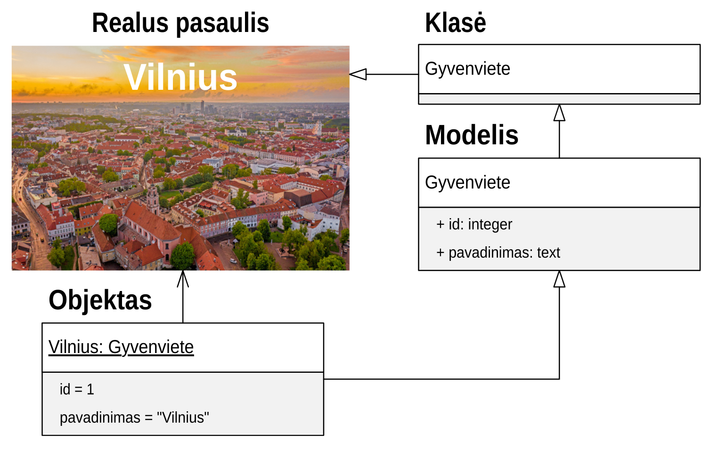

Koncepcinis modelis#
Prieš pradedant darbą su strūktūros aprašais, būtina pasirengti koncepcinio modelio UML diagramą, vadovaujantis Conceptual model conventions (UML) reikalavimais.
Koncepcinis modelis vienareikšmiškai apibrėžia duomenų modelį grafine forma ir naudojamas, kaip vienintelis tiesos šaltinis, kadangi vizualinę duomenų modelio reprezentaciją nesunkiai gali suprasti skirtingose srityse dirbandys žmonės ir pasitivrtinti duomenų modelį, kuris vėliau bus taikomas rengiant duomenų struktūros aprašus.
Reikia atkreipti dėmesį, kad koncepcinis modelis yra vienas, o jį atitinkančių duomenų šaltinių gali būti daug.
Kaip pavyzdį, naudosime žemiau pateiktą koncepcinį duomenų modelį:
Pagal šį koncepcinį modelį, DSA lentelė atrodytu taip:
d |
r |
m |
property |
type |
ref |
prepare |
|---|---|---|---|---|---|---|
datasets/gov/example |
||||||
Administracija |
kodas |
|||||
kodas |
string |
|||||
pavadinimas |
string |
|||||
tipas |
string |
|||||
enum |
"APSKRITIS" |
|||||
"SAVIVALDYBE" |
||||||
Gyvenviete |
id |
|||||
id |
integer |
|||||
pavadinimas |
string |
|||||
savivaldybe |
ref |
Savivaldybe |
||||
Apskritis |
Administracija |
kodas, tipas |
||||
kodas |
string |
|||||
pavadinimas |
string |
|||||
tipas |
string |
"APSKRITIS" |
||||
Savivaldybe |
Administracija |
kodas, tipas |
||||
kodas |
string |
|||||
pavadinimas |
string |
|||||
tipas |
string |
"SAVIVALDYBE" |
||||
apskritis |
ref |
Apskritis |
||||
Pavadinimai nurodyti koncepciniame modelyje, turi identiškai sutapti su
pavadinimai nurodytais DSA lentelės loginio modelio model, property,
type, ref ir prepare stulpeluose.
DSA lentelėje fizinio modelio, source stulpelyje nurodyti pavadinimai
skirtinguose šaltiniuose gali skirtis, tačiau loginio modelio pavadinimai turi
išlikti tokie patys.
Objektas#
Objektas yra viena duomenų eilutė, arba vienas duomenų įrašas ar atvejis. Kalbant apie objektus, naudojamas pavyzdys žymėjimas.
Pavyzdžiui iš aukščiau pateikto duomenų modelio, klasės Gyvenviete objektai
gali būti:
Vilnius
Kaunas
Klaipeda
Sąvoka objektas kalba apie konkretų individualų atvejį ar pavyzdį.
Imant duomenų lentelę iš Gyvenviete modelio, gausime tokius duomenis.
id |
pavadinimas |
savivaldybe |
|---|---|---|
1 |
Vilnius |
10 |
2 |
Kaunas |
11 |
3 |
Klaipeda |
12 |
Šioje lentelėje yra trys objektai.
Objekto pavyzdys UML diagramoje:
UML diagramoje turime tris objetus Vilnius, Kaunas ir
Klaipeda, priskirti klasei Gyvenviete.
Skirtingi objektai gali būti klasifikuojami į klases arba esybes.
Klasė#
Klasė arba Esybė yra vienodas savybes ir vienodą apibrėžimą turinčių objektų aibė, kuriems suteikiamas tam tikras pavadinimas.
Tarkime Vilniaus, Kauno ir Klaipėdos
objektus galime priskirti vienai klasei ir suteikti tai klasei pavadinimą
Gyvenviete.
Klasės pavyzdys UML diagramoje:
Klasė gali neturėti jokių savybių, arba gali turėti savybes, kurios apibūdina pačią klasę.
Tarkime modelis Gyvenvietė turi savybę pavadinimas, tačiau tai nėra klasės
savybė, todėl, kad pavadinimas yra duomenų atributas, kuris nėra klasę
apibūdinanti savybė.
Nurodžius savybes prie klasės, iškeliamas griežtas reikalavimas, visiems modeliams ir subklasėms, atitikti visas klasės savybes.
Tuo tarpu duomenų modelis, gali atitikti tam tikrą klasę, bet gali būti pateikiamas su skirtingomis savybėmis.
Sudarant ontologijas, pateikiami klasių apibrėžimai, dažniausiai be savybių, kad neriboti klasės taikymo. Tačiau tam tikrais atvejais, ontologijoje klasės pateikiamos ir su keliomis savybėmis, kurios apibrėžia pačią klasę.
Modelis#
Klasės savybės apibrežia pačią klasę ir tampa klasės dalimi, tačiau modelio savybės neturi įtakos klasės semantiniam apibrėžimui, tai yra tiesiog duomenų laukų sąrašas pateikiams su klase.
Viena klasė gali turėti daug skirtingų modelių, su skirtingomis savybėmis arba su skirtingais duomenų laukais.
Modelis, schema arba profilis yra konkretus savybių, duomenų tipų sąrašas, kuriame nurodoma kurios savybės yra privalomos, kurios gali turėti daugiau nei vieną reikšmę ir kitas detales.
Sudarant taikymo profilius (angl. Application profile) UML klasių diagramoje pateikiami konkretūs duomenų modeliai, su konkrečiomis savybėmis ir jų tipais.
Modelio pavyzdys UML diagramoje:
Modelis atvaizduojas lygiai taip pat, kaip ir klasės. Ar tai yra klasės ar modelis galima atskirti tik pagal diagramos pavadinimą, jei diagrama vaizduoja ontologiją, tada joje yra klasės, jei taikymo profilį, tada diagramoje yra modeliai.
Jei UML diagramose prie klasių yra pateikti pilni sąrašai savybių su tipais, tada tai greičiausiai yra taikymo profilis.
Generalizacija#
Objektai gali būti skirstomi į klases, tačiau pačios klasės gali būti skirstomos į bendresnes klases, toks apibendrinimo procesas vadinamas generalizacija.
UML diagramose gneralizacija žymima užpildyta rodykle, kurios krypts iš labiau specializuotos siauresnę prasmę turinčios klasės, į labiau apibendrintą, platesnę prasmę turinčią klasę, pavyzdžiui:
Šiame pavyzdyje nurodome, kad Savivaldybe yra Administracija poaibis. Arba
Administracija yra platesnė klasė, o Savivaldybę yra siauresnė, labiau
specifinę prasmę nurodanti klasė.
Identifikatorius#
Kad galėtume vienareikšmiškai įvardinti ar nurodyti tam tikrą objektą, visi objektai privalo turėti unikalius identifikatorius.
Kiekvienam objektui priskiriamas vienas globalus identifikatorius UUID formatu, tačiau objektas gali turėti vieną ar daugiau lokalius identifikatorius.
Globalūs identifikatoriai priskiriami esybei ir atspindi vieną realaus pasaulio objektą, lokalus identifikatorius yra siejams su konkrečiu duomenų modeliu ar duomenų šaltiniu ir skirtinguose modeliuose gali būti naudojami keli skirtingi lokalūs identifikatoriai rodantys į vieną realaus pasaulio objektą.
UML diagramoje aukščiau turime du skirtingus duomenų objektus, kurie turi
vienodą globalų identifikatorių dd79d2a6-d3d6-4fc2-83bb-da9dd15b2a89, tačiau
skirtingus lokalius id = 7 ir kodas = 23.
Globalus identifikatorius suteikiamas esybei Gyvenviete, lokalūs
identifikatoriai suteikiami konkrečiam duomenų modeliui ir konkrečiam duomenų
šaltiniui.
Rengiant DSA lentelę globalūs identifikatoriai žymimi model.ref
stulpelyje arba rezervuotu savybės pavadinimu _id ir yra privalomas.
Savybė#
UML diagramos savybės žymimos sutartine forma:
Sintaksė
access property : type [ cardinality .. multiplicity ]
- access
Prieigos lygis. Gali būti naudojami tokie žymėjimai:
- property
Savybė, žiūrėti
property. Nurodoma savybės URI forma.- type
Duomenų tipas, žiūrėti Duomenų tipai. UML diagramose, jei duomenų tipas yra
refarbabackref, tada nurodomas modelio pavadinimas, URI forma, su kuriuo daroma asociacija.- cardinality
Nurodo ar laukas yra privalomas:
0- laukas yra neprivalomas.1- laukas yra privalomas.
- multiplicity
Nurodo kiek kartų gali būti pateikta lauko reikšmė.
1- lauko reikšmė gali būti pateikta tik vieną kartą.*- laukė reikšmė gali būti pateikta daugiau nei veiną kartą.
Pavyzdys:
UML diagramoje matote Gyvenviete duomenų modelį, kuris turi dvi savybes:
+ id: integer [1..1]
+ pavadinimas: text [1..1]
Abi savybės turi atvirą prieigos lygmenį, id ir pavadinimas kodinius
savybės pavadinimus, integer ir text duomenų tipus ir abi savybės yra
privalomos ir gali turėti tik vieną reikšmę.
Asociacija#
Tiesioginė#
Tiesioginė asociacija nurodoma rodyklės pagalba, jei yra pateikta rodyklė, tada savybių sąraše, savybės, kuri yra pateikta prie rodyklės neberodome.
Rodyklės kryptis visada rodo iš modelio, prie kurio savybė yra apibrėžta, į kitą modelį, su kuriuo savybė yra siejama.
Atvirkštinė#
Asociacijai gali būti naudojami ir atvirkštiniai ryšiai, pavyzdžiui:
Šiuo atveju nurodome type.backref tipo atvirkštinę asociaciją, rodyklės
kryptis ir daugiareikšmiškumas keičiasi, turime vieną savyvaldybę, kuri gali
turėti daug gyvenviečių.
Klasifikatorius#
Klasifikatoriai arba kontroliuojami žodynai, yra galimų reikšmių sąrašas naudojamas tam tikrai savybei.
UML diagramoje klasifikatoriai pateikiami naudojant <<enumeration>>
stereotipą ir punktyrinę priklausomybės rodyklę:
AdministracijosTipas yra klasifikatorius, turintis kontroliuojamą žodyną,
kuriame apibrėžtos dvi galimos reikšmės APSKRITIS ir SAVIVALDYBE.
Struktūros apraše klasifikatoriai aprašomi naudojant enum dimensiją.
Žodynas#
Visos klasės ir savybės (sąvokos) yra skirstomos į žodynus. Dažnai viename duomenų modelyje yra naudojamos sąvokos iš skirtingų žodynų.
Kad atskirti, kuri sąvoka yra iš kokio žodyno, naudojami žodyno prefiksai.
Žodyno prefiksai gali būti naudojami tiek klasės pavadinime, tie savybių ir tipų pavadinimuose.
Jei žodyno prefiksas nėra nurodytas, tai reiškia, kad naudojamas esamas žodynas, kuris yra apibrėžtas duomenų modelyje.
Žodynai taip pat gali būti nurodomi naudojant UML paketus arba vardų erdves:
Sąvokoms, kurios yra vardų erdvės rėmuose, žodyno prefiksai nenurodomi. Žodyno prefiksai nurodomi tik tuo atveju, jei sąvoka yra iš kito žodyno.
IRI#
Visos sąvokos, tokios kaip klasės, savybės, duomenų tipai, taip pat yra objektai, turintys savo identifikatorius.
UML diagramose nurodomi būtent sąvokų identifikatoriai sutrumpinta IRI forma.
IRI yra identifikatorius schema sudaryta iš sekančių komponentų:
scheme :// host / path ? query # fragment
Lietuvos viešąjame sektoriuje naudojama sekanti URI schema:
https://data.gov.lt/id/ vocab / term [ / id ]
- vocab
Žodyno kodinis pavadinimas.
- term
Sąvokos kodinis pavadinimas.
- id
Objekto identifikatorius.
Jei mūsų kuriamam žodynui būtų suteiktas kodinis pavadinimas adresai, tada
mūsų sąvokoms būtų suteikti tokie IRI identifikatoriai:
https://data.gov.lt/id/adresai/Gyvenviete
https://data.gov.lt/id/adresai/id
https://data.gov.lt/id/adresai/pavadinimas
Kadangi pilnas IRI yra gan ilgas, UML diagramose naudojame sutrumpintą IRI
formą su prefiksu. Šiuo atveju, galime deklaruoti, kad ar prefiksas atitinka
https://data.gov.lt/id/adresai/ URI, todėl sutrumpinta forma atrodys taip:
@prefix ar: <https://data.gov.lt/id/adresai/>
ar:Gyvenviete
ar:id
ar:pavadinimas
UML diagramoje naudojame sutrumpintus URI pavadinimus, tačiau kartu su diagrama būtina pateikti ir prefiksų sąrašą, kad būtų ašku, ką reiškia kiekvienas prefikas:
Prefiksas |
Vardų erdvės IRI |
|---|---|
ar |
https://data.gov.lt/id/adresai/ |
locn |
http://www.w3.org/ns/locn# |
dct |
http://purl.org/dc/terms/ |
rdfs |
http://www.w3.org/2000/01/rdf-schema# |